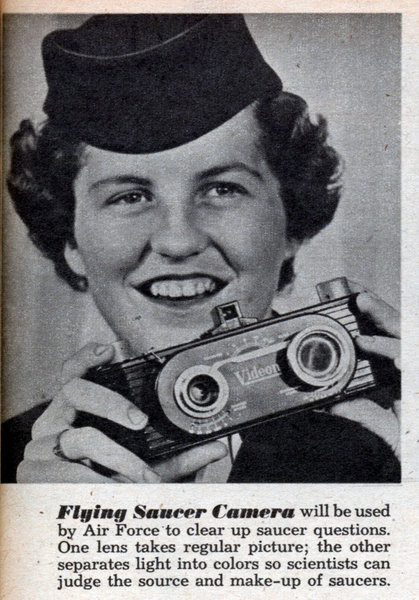

Appareil photo doté de 2 objectifs, dont un diposant d'un filtre à réseau de diffraction, utilisé par
l'USAF Mechanix Illustrated, jan 1953

A Craig (Montana), Warner Anderson et 2 femmes observent durant 10
s un objet argenté en forme de soucoupe à la base rougeoyante, voler au-dessus d'une rivière puis monter rapidement
tout en restant en position horizontale Cas Blue Book n° 2315 non résolu.
Ven A Rauch (Province de Buenos-Aires, Argentine), plusieurs
témoins observent un ovni atterrir. Quelques mn après, une automobile se rend sur les lieux de l'atterrissage Couten, François < Macé, C.: "Les rendez-vous Ovni-Voiture" in "Les
extra-terrestres qui sont parmi nous", UFOWeb.
A la base de l'USAF de Larson (Washington), des hommes de la
82ème escadrille de chasseurs intercepteurs, dont le chef d'escadrille, observent depuis le sol un objet vert, en
forme de disque ou rond, voler en direction du sud-ouest durant 15 mn, avec des mouvements de houle verticale et de
côté, derrière les nuages Cas Blue
Book n° 2323 non résolu.
A Sonoma (Californie), le colonel à la
retraite Robert McNab et Mr. Hunter de la Federal Security Agency observent un objet plat, comme une tête
d'épingle, effectuer un tour à 360° en 9 s, faire des virages abruts à 90° vers la droite et la gauche, s'arrêter,
accélérer et finalement s'envoler verticalement hors de vue au bout de 60 à 75 s Cas Blue Book n° 2326 non résolu.
En Côte d'Or, Yvonne et son mari sont en voiture lorsqu'ils sont
intrigués par 1 phénomène horizontalement oblong "assez gros" semblant illuminé, comme produit par une rangée de
"hublots", apparaissant et disparaissant alternativement, jusqu'à disparaître complètement au bout de 1 h 30
d'observation. De retour à Paris, ils apprennent que la tour de contrôle de Dijon a signalé un phénomène semblable
"Les Aventuriers de l'Etrange", Sud Radio, 14 avril 2007.
Un mémorandum émanant du ministère de l'Air britannique donne l'ordre aux personnels de la RAF de veiller à ce que les données relatives aux observations d'ovnis ne soient
pas divulguées au public.
Près de Guatemala City (Guatemala) le géologue et vendeur J. J. Sackett observe durant 22 s
un objet vert/doré brillant de la forme de la "Goodyear blimp" dont la longueur est le double de la hauteur, voler
horizontalement à 400 miles/h, s'arrêter, puis s'en aller en l'air avec un arrêt Cas Blue Book n°
2337 non résolu.
A Point Muga (Mugu ?) (Californie), R. W. Love, propriétaire de la Love Diving Co.,
chargé de récupérer les drones contrôlés par radio, observe durant 6 mn un disque plat blanc de 18 à 20 pieds
voler horizontalement au-dessus de lui Cas Blue Book
n° 2361 non résolu.
A Corona (Californie), le sergent/T. George Beyer de l'USAF
observe durant 12 mn 5 sphères vertes de 25 pieds voler en formation en "V", puis passer en formation en file
indienne et devenir rouges Cas Blue
Book n° 2364 non résolu.
A Albany (Georgie), le personnel de maintenance du radar détecte une cible
stationnaire durant 20 mn. Au même moment une observation visuelle qui sera expliquée Cas Blue
Book n° 2365 non résolu.
A Conway (Caroline du Sud), entendant un remue-ménage dans sa grange,
un fermier observe 1 objet de 7 m de long et 4 m de large, à hauteur d'arbre. Il est de couleur gris clair et
éclairé de l'intérieur. Il ressembleà un demi-oeuf. Le témoin tire 1 coup de fusil sur l'objet. De nombreuses têtes
de bétail meurent "mystérieusement" dans la région après l'observation.